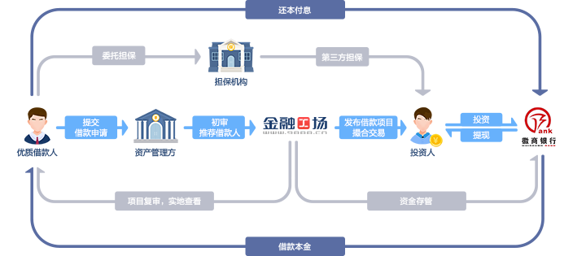

{% extends '../../../lib/templates/main_base.swig.html' %}

{% block title %}关于我们 - 金融工场{% endblock %}

{% block content %}
<div id="header"></div>

<div class="title">平台简介</div>
<div class="desc">
    <div>
        金融工场是香港上市公司中国信贷(股票代码：08207.HK)旗下专业互联网金融平台，由北京凤凰信用管理有限公司(简称：凤凰信用)倾力打造、专注于优质金融资产交易的P2P平台，目标是为小贷公司、资产管理公司及其他贷款机构等提供P2P解决方案及线上交易，为投资者提供精选的优质信贷资产。
    </div>
    <div>2015年1月金融工场被香港上市公司中国信贷全资收购，此前金融工场由北京大众联合投资管理有限公司(简称大众微型金融)运营。</div>
    
</div>

<div class="title">客服电话</div>
<div class="desc">
    <a href="tel:400-0322-988">400-0322-988</a>
    周一至周日 9:00-18:00
</div>

<div class="title">公司地址</div>
<div class="desc"> 北京市朝阳区朝阳门外大街18号11层1105内008号</div>

<div class="footer">
    <table class="">
        <tr>
            <td>
                <a href='http://www.9888.cn/top/index.do?pc=1'>PC首页</a>
            </td>
            <td>
                <a href='http://bbs.9888.cn'>工友之家</a>
            </td>
            <td>
                <a href="/static/wap/app-download/index.html">下载App</a>
            </td>
            <td>
                <a href="/static/wap/about-us/index.html">关于我们</a>
            </td>
        </tr>
    </table>
    <div class="copyright">©2016 金融工场版权所有</div>
    <div class="copyright">北京凤凰信用管理有限公司</div>
</div>

<br/>
<br/>
<br/>
<br/>

<a class="app-download-link" href="/static/wap/app-download/index.html">
    
</a>
{% endblock %}